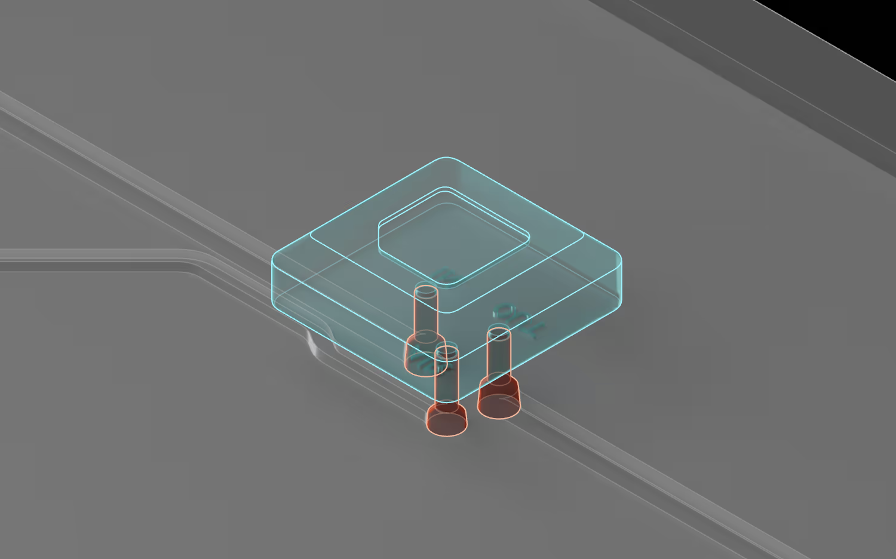
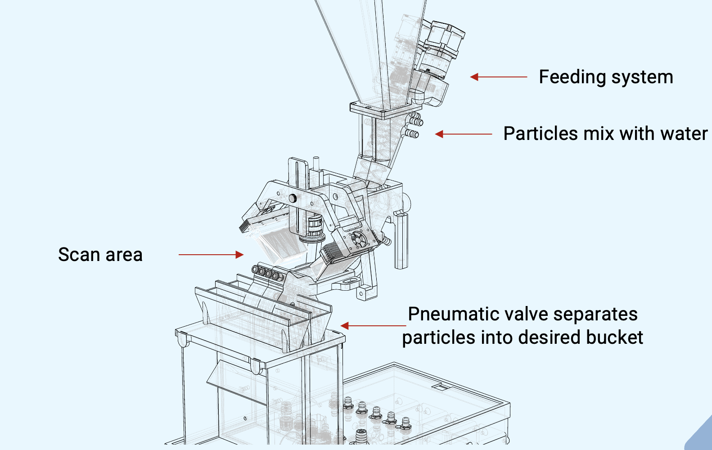
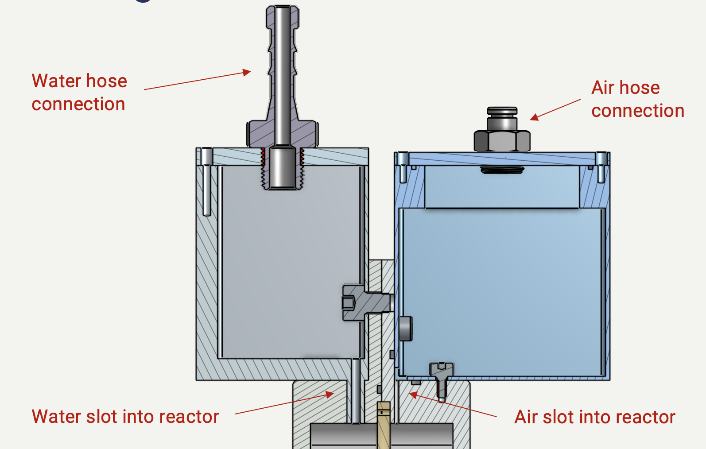
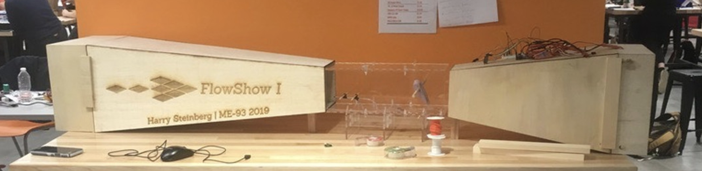
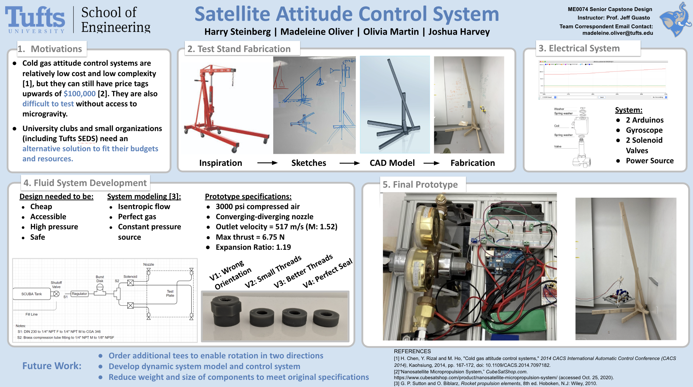

At Parallel Fluidics, I design, prototype, and validate mechanical systems used to manufacture microfluidic devices at scale. This includes precision mechanisms for lamination, alignment, and inspection, with a focus on modularity and manufacturability.
I developed and implemented validation tests for automated vision sorting valves, improving pass rates from 50% to over 90%. This involved both mechanical tuning and developing test setups to isolate sources of error.
I designed and built a small-scale bioelectrochemical reactor that converts concentrated wastewater and air into electricity. This involved iterative prototyping, fluid sealing strategies, and performance testing.
I designed, fabricated, and tested a small-scale wind tunnel with streamline visualization and real-time velocity monitoring, capable of reaching speeds up to 20 m/s. This involved iterative prototyping, calibration of measurement sensors, and optimization of airflow dynamics.
I developed a prototype satellite attitude control system that uses pressurized air, inertial sensors, and control valves to maintain precise orientation. The project involved iterative testing, tuning control algorithms, and validating system responsiveness under simulated conditions.
Email me at harrymsteinberg@gmail.com.